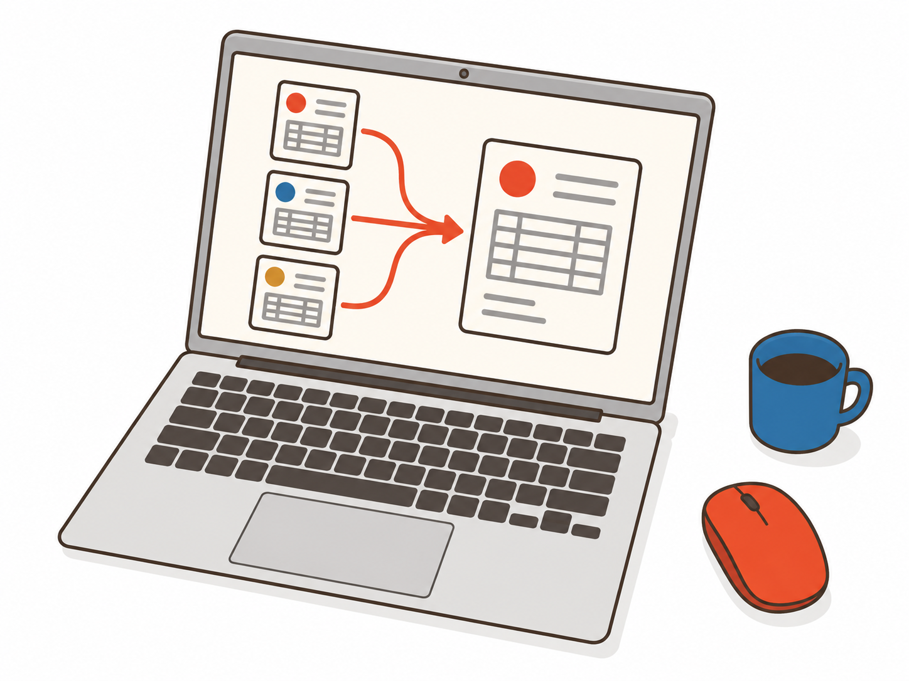

大口・継続発注のサポート
お弁当の手配を任せたい方
総務・人事、研修担当、撮影・イベントの手配担当など
- 一度に多くのお弁当を手配したい
- 連日・定期的な発注を相談したい
- 予算・日程・食事の条件に合う提案がほしい
店舗探し、人数や予算の確認、日程に合わせた発注。毎回の手配が担当者任せになっている。
注文者や店舗ごとの請求処理、立替精算、部署別の集計。利用が増えるほど、確認することも増えている。
社内のお弁当利用を、手配から管理までまとめて相談できる窓口があれば。
会社の利用状況やルールを伺い、必要な支援と運用方法をご提案。お申し込み・必要な登録を通じて、継続的に相談できる体制を整えます。
提供範囲・開始時期・適用条件は、ご利用状況とご希望を伺って個別にご案内します。
利用シーンや手配・管理のご希望から、おすすめの相談先をご案内します。
大口・継続発注のサポート
総務・人事、研修担当、撮影・イベントの手配担当など
一括精算・利用管理のサポート
経理・財務、総務、各部門の管理担当など
手配と管理、両方のご相談も承ります。必要なサポートからご相談ください。
人数・予算・日時・場所を伺い、店舗やお弁当をご提案。大量の発注や、撮影・研修などの継続的な手配をサポートします。
食事への配慮事項や配送条件は、対応可否を確認しながら進めます。

一括精算の申し込み単位で請求をまとめます。部署ごとに請求を分けたい場合も、登録単位を含めて運用をご相談いただけます。

部門・利用者ごとの利用実績レポートをご相談いただけます。集計単位・提供頻度・対応範囲は、導入時に確認します。
法人利用のご相談
今の利用方法やお困りごとを伺い、会社に合った進め方をご案内します。
手配のみ・管理のみのご相談も承ります。
会社の利用条件を担当者と共有し、次回以降の手配も相談できます。
利用者や請求単位を整理し、現場と管理部門に合う進め方を確認します。
利用状況に応じたサポート範囲や個別条件をご案内します。
参加人数や日程に合わせたお弁当選びと手配を相談。
連日の手配や現場ごとの条件を担当者と確認。
大人数の食事やお届け条件をまとめて相談。
各部署の発注と請求の運用を整理。
上記は利用イメージです。対応可否は条件によって異なります。
具体的なご予定がある方へ
継続的な手配や、請求のまとめ方もあわせてご相談いただけます。
ご利用条件を伺い、対応可否をご案内します。
手配や管理のお困りごとを伺います。
必要な支援、費用、開始時期をご案内します。
必要な手続きや利用者登録を進めます。
合意した内容に沿ってサポートを開始します。
お弁当代・配送料などは、ご注文内容や店舗の条件によって異なります。
はい。必要な支援からご相談ください。両方をまとめてご相談いただくこともできます。
現在のご利用状況を伺い、法人向けサービスに必要な手続きをご案内します。
ご希望の数量・頻度・予算をお聞かせください。ご利用条件を確認し、対応できる内容をご案内します。
お届け先・日時・数量などによって異なります。条件を伺い、対応可否を確認します。
手配の負担、請求の整理、継続的な利用。今のお困りごとからお聞かせください。